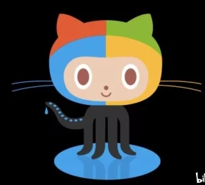

View more cat photos

在大家心目中，猫是慵懒的可爱的化身，它可以睡饱了再起来吃饭， 可以逗趣小耗子，可以卖得了萌，使得了坏，这样百变的小怪兽就集结在一只宠物上，怎能不惹人怜爱。
养动物有的时候，就是介于爱与恨之间，当你钦羡别人萌宠这么可爱的时候， 你一定没有想过，狗狗和猫猫会到处拉屎，甚至会屯老鼠，啃鞋子，用爪子爬门，你不理它， 它就挠你，你要对它发脾气，它会比你更来劲。所以，狗猫慎入，没有一定的准备， 切勿随便去侍养动物。它们一旦认定你了，你就是它们的主人，如果你抛弃它们，它们必定心中重创。
Things cats love:
Top 3 things cats hate:
Things cats love:
Top 3 things cats hate: